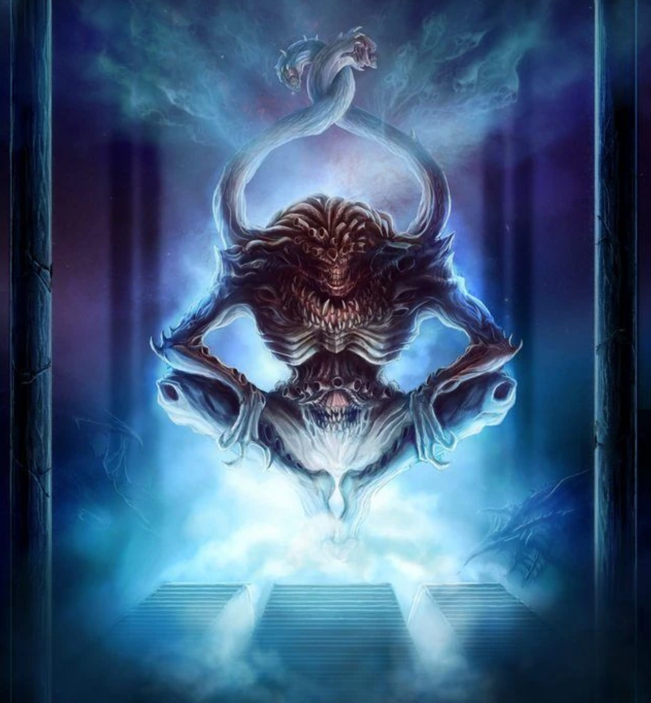

 "Tzeentch, also known as the "Changer of Ways," the "Lord of Change," "Lord of Sorcery," and the "Architect of Fate," among many other names and titles, is the Chaos God of change, evolution, mutation, intrigue, ambition, knowledge, sorcery, destiny, lies and trickery. Tzeentch is especially empowered by the desire for change and ambition for advancement among mortals. Tzeentch's true power is sorcery, and as all sorcery flows from the font of the Immaterium, so too is Tzeentch the master of that twisted, chaotic medium of psychic energy. Tzeentch embodies mortals' tendency towards mutability and change, the drive to evolve and manipulate. This spirit is present in the essence of every living creature from the first division of cells in the womb to the ultimate craving for survival. It is in the hearts of those with the strongest desire to prevail that Tzeentch whispers his insidious promise; offering a means of life eternal to those unwilling to accept death and oblivion as inevitable. It is also Tzeentch who weaves the threads that connect every action, plot and subtle intrigue in a galaxy-wide game of manipulation and subterfuge. At the end of each of these threads lies the ensnared soul of a Human puppet; those of Tzeentch's mortal servants and agents who believe they serve the Lord of Sorcery in mutually beneficial pacts. The truth is that Tzeentch's every action is planned with its ultimate goal as his own establishment as the pre-eminent Chaos power in the Realm of Chaos, the ultimate victor in the Great Game. Of course, the very nature of the Lord of Entropy is such that, were he to attain this triumph, he would still strive for turmoil and change. In many ways, Tzeentch is both the best and least understood of the Dark Gods."
"Hasophet and his Mind-Eaters descend upon the Imperial Hive World of Mangel III amidst an ongoing T'au invasion. Before landing the Sorcerer shatters the Shrouded Crystal in orbit, casting its shards throughout the atmosphere to summon an impenetrable darkness which surrounds the planet. Cut off from orbital reinforcements and relays, the T'au armies and planetary defence forces continue fighting in utter confusion. In the Valley of Sacrifice, between the lines of the battling armies, the Mind-Eaters array the trophies and fetishes acquired from their nine hundred and ninety-eight preceding rites in a great crescent, and between the horns of the crescent Hasophet mounts an enormous pyre. From its pinnacle he beholds the encroaching T'au and Imperial forces -- they are to be his, their thoughts and memories devoured as was foretold. Holding aloft the hearts of Korthuphos, Hasophet ignites his pyre with their blood, incanting an oath to Tzeentch as the flames begin to lap his armour. The sudden rush of psychic energy towards Hasophet shreds the minds of the hundreds of thousands of combatants on Mangel III, siphoning their very life force into the Sorcerer. But as the Grand Conspirator's changes take hold Hasophet screams in agony. The armies on the horizon are pulled physically towards him like gnats caught in a thundering vortex. Ranks of screaming bodies and enormous war engines fly across the darkened land, colliding with Hasophet where they are quickly absorbed by his warping form. His body devours metal and flesh with equal voraciousness as it continues to grow, howling in excruciation from newly forming maws. His mass pupates, not into the form of a Daemon Prince, but to that of a Mutalith Vortex Beast. The Warp vortex emanating from the hideous creature extends outwards with each newly consumed sacrifice until it encircles the planet, and with a final mind-tearing scream Mangel III itself is torn from realspace. In its place there is left only a perpetual dark shroud and an echo of Hasophet's final, pitiful cry."
Chaos Herald - Kairos Fateweaver
"Kairos Fateweaver, also known simply as Fateweaver and the Oracle of Tzeentch, is a two-headed Lord of Change, a Greater Daemon of Tzeentch. Fateweaver is the mightiest of the Lords of Change that serve Tzeentch and is blessed with access to all of his knowledge concerning the nature of fate and destiny. Fateweaver has gained infallible knowledge of both the past and the future, but cannot see what will occur in the present. As with all the gifts of Chaos, however, there is always a catch. One of Kairos' two heads will always answer with the truth. Unfortunately, the other head simultaneously responds with a contradictory answer, the falsehood being as believable as the truth."
Traitorous Primarch - Magnus
Magnus the Red, the Primarch of the Thousand Sons Traitor Legion, is one of the few surviving primarchs and is currently an extremely powerful Daemon Prince of the Chaos God Tzeentch. He was also known during the early years of the Imperium as the "Crimson King" and the "Red Cyclops." A giant in both physical and mental terms whilst still an inhabitant of the Materium, the copper-skinned Magnus possessed tremendous innate psychic ability, and constantly sought to understand the nature of the Warp, becoming a Sorcerer of formidable power. Magnus thought he would be able to control the "Great Ocean" of psychic energy that was the Warp; however, his prodigious and careless application of his psychic gifts eventually caused him to fall out of favour with his father, the Emperor of Mankind, as well as with the majority of his brother Primarchs. His psychic immaturity, recklessness, selfish pride and arrogance also caused his own undoing, as it eventually brought about his own damnation and eternal servitude to the Dark God of Change, Tzeentch.
Greater Demon
"A Lord of Change, also called a "Supreme Mutator," and one of the "Eyes of Tzeentch," is an insidious Greater Daemon of Tzeentch, the Chaos God of change and sorcery. Lords of Change are creatures born from some impossible nightmare, immense bird-like Daemons with shimmering skin, wicked curved beaks and multi-coloured, spectrum-shattering wings. Those who gaze upon these twisted prisms of pure magic begin to feel their sanity shred and reason slip away. Faced by a being of change incarnate, bedrock beliefs crumble and twist, and the mind seeks firm purchase in vain. Treachery, deceit, capriciousness: these are the hallmarks of the Lords of Change. Tzeentch's greatest servants weave scheme upon scheme, a dense tangle of intermingling threads, so convoluted and eon-spanning that none can grasp their true purpose. A confrontation with a Lord of Change is likely to occur when and where the creature wills it. Few have ever managed to get the drop on these servants of Tzeentch, for the Changer of Ways is the master of destiny itself, and his greatest servants possess a portion of that power."
Lesser Demon
"To describe a daemonic Horror is all but impossible, for they are pure Chaos unbound, given capering and energetic form by the will of Tzeentch. The Lesser Daemons called Horrors are often used as daemonic slaves by the Greater Daemons called Lords of Change. They do not have static material bodies, sometimes taking on a discernible form, at others blurring into a frantic mass of colour as they dash and scramble across the battlefield. Horrors can nonetheless be said to have two distinct states defined by the colour they present to the naked eye -- the Pink Horror and the Blue Horror. Lesser Daemons of Tzeentch are literally magic made manifest. Pink Horrors, as they are known, frolic together in cheerful, brightly coloured mobs that caper and whirl, cackling insanely at their own incomprehensible jokes as they blur and cartwheel across the battlefield. As bright bolts of raw sorcery leap from their outstretched fingers, the Pink Horrors are filled with an increased joy, emitting squeals of laughter supplemented with many "oohs" and "ahhs" of delight as the magical lightshow screams overhead. These energies have a tendency to engulf the Pink Horrors' enemies in searing conflagrations of mutation, much to the joy of the Daemons themselves."